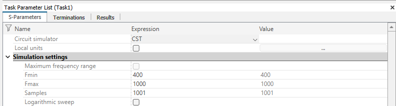
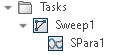
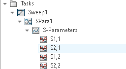

Task Definition¶
CST Design Studio provides several simulation tasks. Those tasks can be customized, added and removed from the project and enabled or disabled.
Not every task is compatible with every model as the presence of some special components may be required. E.g., an S-parameter simulation does not work without external ports.
Simulation Tasks¶
Here we will create a Simulation Task. Specifically, we intend to calculate the S-Parameters for the lumped filter design, that was created in the Project Parameters guide.
First, please open the lumped filter example and run these preparations:
import cst.interface
from pathlib import Path
import tempfile
from typing import Iterator
project_dir = Path(tempfile.mkdtemp())
print(f"Working in temporary directory: {project_dir}")
de = cst.interface.DesignEnvironment.connect_to_any_or_new()
prj = de.active_project()
assert 'lumped_filter' in prj.filename()
For the creation of a task we created the helper function create_simulation_task which is seen below.
def create_simulation_task(
prj: cst.interface.Project, task_type: str, name: str, *, properties: dict = None
):
"""Creates a simulation task of the given type and with the given name and properties"""
task = prj.schematic.SimulationTask
task.Reset()
task.Type(task_type)
if name:
task.Name(name)
if properties:
for property_name, property in properties.items():
task.SetProperty(property_name, property)
task.Create()
The function needs the current project, the type of task and a name for the task. Optionally, it is possible to pass properties for the task in a key-value-dictionary. The possible parameters depend on the type of the task. A table of all parameters can be found here.
# `prj` should be the lumped-filter
# Save Project as a new one
prj.save( project_dir / "lumped_filter_s_parameter.cst", allow_overwrite=True)
# Change project units
prj.schematic.Units.SetUnit("Frequency", "MHz")
prj.schematic.Units.SetUnit("Time", "us")
# create a Task
create_simulation_task(prj, "s-parameters", "Task1", properties={"fmin": "400", "fmax": "1000"})
# Run Task
prj.schematic.UpdateResults()
# Save Project
prj.save()
Using this function, we can now create the task fitting to our schematic.
Our circuit should operate in the MHz / μs range.
So we change the project units to the wanted units using SetUnits.
We set the Minimum and Maximum frequencies for the task as properties.
The resulting Task Parameter list is shown below.

To start this task we call prj.schematic.UpdateResults.
This updates all created tasks in the project.
It is also possible to only update a specific task by calling Update on the SimulationTask-Object.
Parameter Sweep¶
Using Parameter Sweeps, we can see how the results change when these parameters are modified. The following code shows how a parameter sweep can be set up and started.
def move_task_in_tree(
prj: cst.interface.Project, *, parent_name: str, child_name: str, next_task_name: str = None
):
"""Moves the Task with the child_name. Parent_name defines the new parents name and if "next_task name" is given,
the task is moved above the task with next_task_name"""
task = prj.schematic.SimulationTask
task.Reset()
task.Name(child_name)
task.MoveInTree(parent_name, next_task_name if next_task_name else "")
def create_parameter_sweep(
prj: cst.interface.Project, sweep_name: str, sequence_name: str, parameter: dict
):
"""creates a parameter sweep of the simulation task with sweep_name"""
# sweep = project.schematic.ParameterSweep
# sweep.SetSimulationType(sweep_name)
# sweep.AddSequence(sequence_name)
# for key, value in parameter.items():
# sweep.AddParameter_Samples(sequence_name, key, value["from"], value["to"], value["steps"],
# value["logarithmic_sweep"])
# AddParameter_Samples nicht freigegeben, also execute_vba_code
sweep_code = f"""Sub Main
With DSParameterSweep
.SetSimulationType ("{sweep_name}")
.AddSequence ("{sequence_name}")"""
for parameter_name, parameter_value in parameter.items():
sweep_code += f"""
.AddParameter_Samples ("{sequence_name}", "{parameter_name}", {parameter_value["from"]}, \
{parameter_value["to"]}, {parameter_value["samples"]}, {parameter_value["logarithmic_sweep"]})"""
sweep_code += """
.Start
End With
End Sub
"""
prj.schematic.execute_vba_code(sweep_code)
# continue with `prj`
# Save project as a new one
prj.save( project_dir / "lumped_filter_parameter_sweep.cst", allow_overwrite=True)
# Change project units
prj.schematic.Units.SetUnit("Frequency", "MHz")
prj.schematic.Units.SetUnit("Time", "us")
# create a Task
create_simulation_task(prj, "s-parameters", "SPara1", properties={"fmin": "400", "fmax": "1000"})
# create parameter sweep Task
create_simulation_task(prj, "parameter sweep", "Sweep1")
# assign Task1 to Parameter Sweep
move_task_in_tree(prj, parent_name="Sweep1", child_name="SPara1")
# Define parameters to be checked
parameter_to_sweep = {
"C2": {"from": 33, "to": 37, "samples": 5, "logarithmic_sweep": False},
}
# Create Parameter Sweep
create_parameter_sweep(prj, "Sweep1", "SPara1", parameter_to_sweep)
# Save project
prj.save()
We create the same Task as in Simulation Tasks.
Next, we need to create a simulation task of the type “parameter sweep”.
Like all other Simulation control tasks, a parameter sweep task cannot be executed on its own.
It needs to be associated with another simulation task.
In our case, we want the parameter sweep to execute an S-Parameter task for each parameter combination.
For this, we use the created function move_task_in_tree.
This function moves the task with the given “child_name” to the task with the given “parent_name”.
If “next_task_name” is passed as well, the task is inserted before the task with this name.
Otherwise, it appended at the end of the child list.
The Navigation tree should look something like this.

The function create_parameter_sweep creates a parameter sweep and executes it.
The passed “sweep_name” represents the name of the parameter sweep Simulation Task, created before.
“sequence_name” represents the name of the simulation task.
The parameters that should be swept are passed as a dictionary.
This includes the parameter name that should be modified, the start and end value, the number of samples
that should be checked between the start and end value, and a boolean value that determines the type of the sweep.
“Logarithmic sweep” if this value is true, or “Linear sweep” if this value is false.
After the parameter sweep has finished, the navigation tree adds the results to the S-parameter task.

The next guide will show how to work with the results.